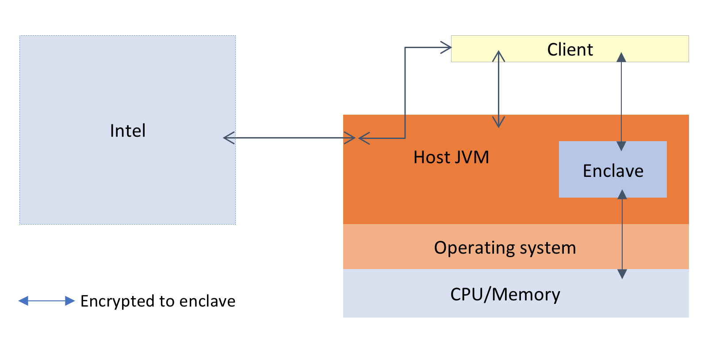
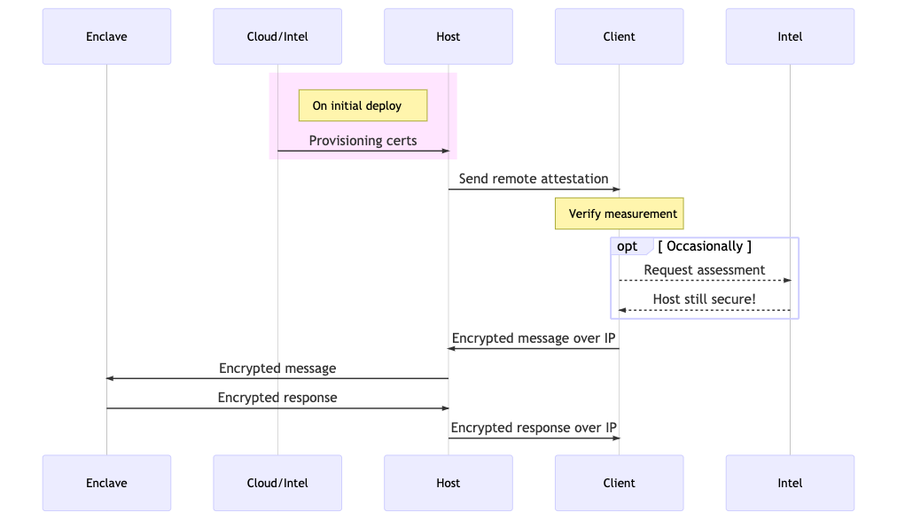

Architecture overview¶
Primary entities¶
There are three entities in an application that uses Conclave:
- Enclaves
- Hosts
- Clients
Clients send and receive encrypted messages to/from enclaves by interacting with the host over the network. Conclave doesn't mandate any particular network protocol for client<->host communication. It's up to you. However the content of the messages is defined, using the Mail API. Mail is described below.
Host programs load enclaves. From a security perspective they are fully untrusted and assumed to be malicious at all times. Hosts are relied on to provide the enclave with resources but beyond that work only with encrypted data. In some kinds of app their function is primarily proxying communications from clients to enclaves, but sometimes they also assist with application logic. Hosts use a standard JVM like HotSpot.
Enclaves are classes that are loaded into a dedicated sub-JVM with a protected memory space, running inside the same operating system process as the host JVM. Because they don't share heaps the host may exchange only byte buffers with the enclave. Direct method calls also don't work out of the box: that would require you to add some sort of RPC system on top. In this way it's similar to interacting with a server over a network, except the enclave is fully local.

In the above diagram orange shaded boxes are untrusted and could attack the enclave: the host and operating system (which includes the BIOS, drivers and peripherals). Blue shaded boxes are part of the trusted computing base - the set of components that must be correct and non-malicious for the system to work. That includes the enclave and of course the CPU. The client communicates with the enclave via the host. Both client and host interact with Intel servers to obtain relevant pieces of data proving the CPU is genuine and considered secure (see below for more information on this process). The enclave has a complex interaction with both operating system and host, in which the OS schedules the enclave onto the CPU and provides resources but is otherwise locked out of the enclave's operation. For its part, the enclave cannot interact with the OS directly and runs in what is effectively a "bare metal" embedded style environment. It cannot load DLLs/.so files or do system calls, so there's no way for it to do things like load files directly. It must ask the host to do it and use cryptography to prevent the malicious host from tampering with the data as it's loaded or saved.
Notice
Because the enclave runtime environment isn't the same as a normal HotSpot JVM, you will need to test your enclave code carefully and avoid advanced features that the embedded JVM doesn't support, such as Java Flight Recorder.
Remote attestation¶
To use an enclave, clients need to know the network address where the host process for an enclave instance is
running so they can send it messages, and they also need to obtain an EnclaveInstanceInfo object from the host.
This could be downloaded on demand from the host, or it could be published somewhere. This object encapsulates a
remote attestation. The client tests the EnclaveInstanceInfo against a set of constraints, depending on
how flexible they want to be about software upgrades to the enclave. Constraints are represented by an
EnclaveConstraint object, which can be read from/written to
a small domain specific language suitable for embedding in config files, command line options and so on. A
constraint may specify that a specific set of code hashes is required i.e. every version is whitelisted and no
upgrade is possible until the constraint is adjusted. Or, it may specify a set of allowed signing keys, enabling
enclave authors to release new versions whenever they want. In that scenario the enclave creator is trusted,
but the entity hosting the enclave instance may not be.
When they're happy, they create encrypted messages using the key in the EnclaveInstanceInfo. By sending and
receiving such messages to the host (and from there to the enclave), communication is established. See the Mail
section below for further discussion of this.
Whilst the high level setup has just those three entities, real deployments have more:
- Intel
- Optionally, a cloud provider
- Optionally, an auditor
Intel. Intel's involvement in a deployed architecture is limited to providing the CPU hardware and running some servers. These servers provision the host with certificates guaranteeing authenticity of the chip (once, on initial setup) and provide the client with an assessment of the security of the host given a remote attestation (whenever the client requests it). If Intel's servers become unreachable by the clients that's not a problem, it just means the security of the host machine may degrade without the clients realising.
For instance if host's SGX software stack is out of date and has known vulnerabilities, or if the BIOS configuration is not correct, this will be reported to the client by Intel's servers as part of verifying and processing the data inside the remote attestation provided by the client.
Cloud provider. A cloud provider needs to support SGX for Conclave to be usable. They may operate their own provisioning servers that take over from Intel's.
Notice
Cloud providers running their own provisioning servers is a new feature of SGX and not yet supported by Conclave.
Auditor. In the pure enclave-oriented model, the user is responsible for understanding what the enclave does before using it by reading the enclave's source code. If the user doesn't do this then enclaves have no point. In practice the user may wish to outsource this auditing to someone else.
Protocol sequence diagram¶
This is what a typical interaction looks like:

The first time SGX is used on a machine there are interactions with either the cloud provider or Intel to retrieve
machine certificates proving authenticity. The host then gets a remote attestation (EnclaveInstanceInfo) to the
client somehow, the client verifies it and optionally asks Intel if the hardware setup of the machine is still
considered to be secure, or if there are known vulnerabilities (see renewability). This can be
repeated as often as the client wants, e.g. every day. Once this is done the client can send messages to the enclave
through the host.
Mail¶
Communicating with an enclave requires sending and receiving encrypted and authenticated messages. One possible approach is to embed a TLS stack into the enclave and use something like HTTPS, but this technique has some problems and limitations that are resolved via the Conclave Mail API. Mail makes communication between enclaves and clients easy, as well as solving common problems faced with doing application development.
Testing and debugging¶
Conclave provides full unit testing support for enclaves. Enclaves themselves can be compiled for one of three modes:
- Production/release: fully encrypted and protected memory.
- Debug: the same as production, but special instructions are provided that allow enclave memory to be read and modified. This mode provides no protection but is otherwise a faithful recreation of the standard environment.
- Simulation: SGX hardware isn't actually used at all. This is helpful during development when SGX capable hardware may not be available.
The modes must match between how the enclave was compiled and how it's loaded. This is handled for you automatically.
Inside the enclave System.out and System.err are wired up to the host console, but logging to files doesn't work.
This is to avoid accidentally leaking private data to the host via logging.
Notice
Future versions of the platform may offer encrypted logging of various forms.
Virtual machines and performance¶
Enclave code can run on one of two different virtual machines. Both can execute JVM bytecode. One is a small, specialised runtime called Avian. Avian is slow but can dynamically load bytecode, which some Java frameworks like to do. The other is GraalVM Native Image (SubstrateVM). The latter compiles your entire program to native code ahead of time, erasing any code that isn't used and optimising it as a whole. This can yield large speedups and memory usage improvements, at the cost of being unable to dynamically load new classes.
The differences between the two runtimes is summarised by the table below:
| Avian JVM | GraalVM Native Image | |
|---|---|---|
| Execute dynamic JVM code |  |
 * * |
| Java 8 Support | |
|
| Java 9+ Support | |
* |
* Dynamic JVM code execution and Java 9+ support using GraalVM Native Image is planned for a future release of Conclave.
The speedups from using Native Image can be significant. However, as the enclave environment is small the performance will still be lower than with a regular HotSpot JVM. This table shows the performance difference and how they vary between a variety of benchmarks taken from the Computer Language Benchmarks Game.
Note
The "empty" benchmark is measuring the overhead of entering and exiting the enclave, without doing any work. As entering/exiting triggers a variety of hardware mechanisms designed to block side channel attacks this is naturally expensive relative to the cost of a regular function call, however, once the enclave is doing real work this transition cost becomes less relevant.
| Benchmark | Runtime | Score | Error | Units |
|---|---|---|---|---|
| empty | Avian | 15970.313 | ± 837.783 | ops/s |
| empty | GraalVM | 51921.076 | ± 1697.024 | ops/s |
| empty | HotSpot | 49453365.793 | ± 3404118.758 | ops/s |
| binary_trees | Avian | 19.727 | ± 0.733 | ops/s |
| binary_trees | GraalVM | 454.061 | ± 31.089 | ops/s |
| binary_trees | HotSpot | 1758.980 | ± 79.428 | ops/s |
| fannkuch | Avian | 0.277 | ± 0.007 | ops/s |
| fannkuch | GraalVM | 4.181 | ± 0.024 | ops/s |
| fannkuch | HotSpot | 5.925 | ± 0.063 | ops/s |
| fasta | Avian | 1.692 | ± 0.010 | ops/s |
| fasta | GraalVM | 3.185 | ± 0.028 | ops/s |
| fasta | HotSpot | 4.022 | ± 0.127 | ops/s |
| himeno | Avian | 0.104 | ± 0.001 | ops/s |
| himeno | GraalVM | 0.179 | ± 0.004 | ops/s |
| himeno | HotSpot | 0.366 | ± 0.003 | ops/s |
| mandelbrot | Avian | 1.855 | ± 0.861 | ops/s |
| mandelbrot | GraalVM | 5.529 | ± 0.134 | ops/s |
| mandelbrot | HotSpot | 6.385 | ± 0.132 | ops/s |
| nbody | Avian | 0.359 | ± 0.004 | ops/s |
| nbody | GraalVM | 1.205 | ± 0.021 | ops/s |
| nbody | HotSpot | 1.279 | ± 0.017 | ops/s |
| pidigits | Avian | 0.747 | ± 0.020 | ops/s |
| pidigits | GraalVM | 9.941 | ± 0.185 | ops/s |
| pidigits | HotSpot | 24.722 | ± 0.301 | ops/s |
| spectral_norm | Avian | 2.819 | ± 1.076 | ops/s |
| spectral_norm | GraalVM | 11.923 | ± 0.274 | ops/s |
| spectral_norm | HotSpot | 17.345 | ± 0.930 | ops/s |
Higher scores are better. As you can see, GraalVM based enclaves are around 4x-12x faster than with Avian, depending on the task. The performance hit overall of using an enclave is also highly dependent on what exactly the code is doing (primarily, memory access patterns).